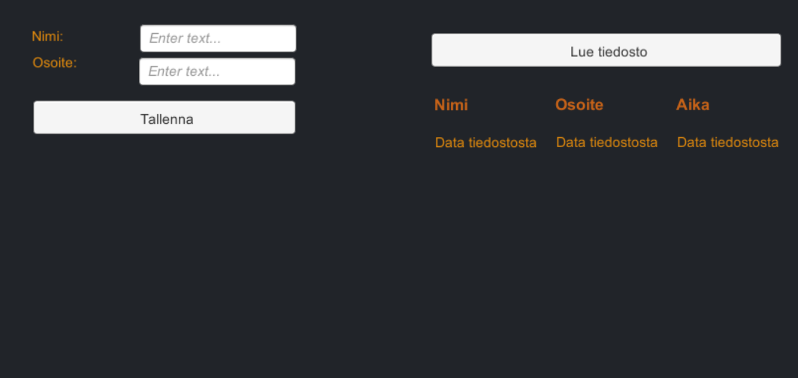
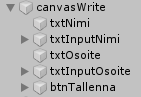
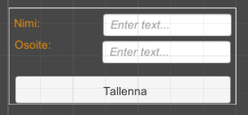
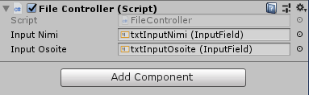
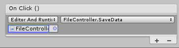
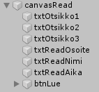
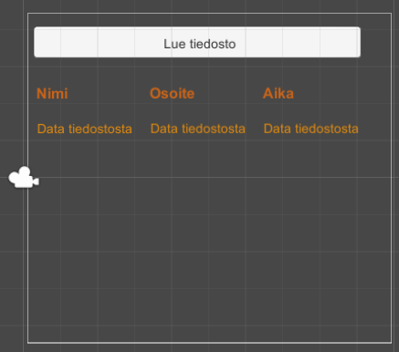
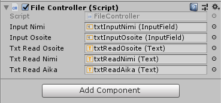
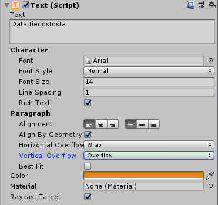

Tiedosto ja luokat
Käyttöliittymä
Tarkoitus on opetella lukemaan ja kirjoittamaan tiedoston tietoja ja hyödyntämään tässä omaa apuluokkaa. Ohjelmassa tallennetaan csv-tiedostoon henkiöitä, tallentaminen tapahtuu painikkeen avulla. Tämän jälkeen voidaan lukea tiedoston sisältö sarakkeittain Text-ohjaimiin.

Laadi aluksi yksinkertainen lomake jonka avulla voidaan syöttää henkilön tiedot tiedostoon.
- Muuta Canvasin ominaisuus Screen Space Camera, raahaa Main Camera kohtaan Render Camera.
- Nimeä ohjaimet järkevästi.
- Säädä koko Scale-asetuksen avulla sopivaksi.
- Esimerkki käyttöliittymästä:


FileController.cs
FileController-luokan avulla voidaan tallettaa tiedostoon talteen syötteet. Tallennetaan ;-merkein erottuun csv-tiedostoon tiedot jotta ne on helposti luettavissa uudestaan.
- Lisää uusi tyhjä Game Object, nimeä FileController. Lisää tämän jälkeen uusi skripti FileController.cs, raahaa tämä skripti Game objektille.
- Ryhdytään seuraavaksi kirjoittamaan skriptiä. Lisää aluksi kirjastot mukaan
using UnityEngine.UI; using System.IO;
- Lisää luokalle kaksi julkista muuttujaa joiden avulla saadaan selville mitä käyttäjä on kirjoittanut.
public InputField inputNimi; public InputField inputOsoite;
Lisää editorissa kentille käyttöliittymän InputField-kentät.
- Lisätään julkinen aliohjelma SaveData()
public void SaveData() { string fileName = "Data.csv"; string path = "Assets/"; // haetaan kirjoitettavat tiedot: string osoite = inputOsoite.text; string nimi = inputNimi.text; string aika = System.DateTime.Now.ToString("yyyy-MM-dd HH:mm:ss"); // luodaan tiedosto StreamWriter writer = new StreamWriter(path + fileName, true); // kirjoitetaan rivi tekstiä, erotinmerkkinä ; string rivi = nimi + ";" + osoite + ";" + aika; writer.WriteLine(rivi); Debug.Log(rivi); writer.Close(); } - Lisää painikkeelle toiminta.

- Paina +-nappia painikkeella
- Valitse Editor And Runtime
- Raahaa FileController objektiksi
- Määritä oikea funktio suoritettavaksi.
Apuluokka
Tehdään seuraavaksi luokka jota käytetään tietueen tiedon käsittelyssä. C#-koodissa kirjoitetaan usein luokkien setterien ja getterien sijaan ns. auto properties -muuttujia.- Julkisia muuttujia joita voidaan asettaa suoraan luokan ulkopuolelta.
- Toinen vaihtoehto on tehdä yksityiset (private) muuttujat joita kutsutaan julkisten apuohjelmien kautta (getNimi, setNimi jne).
- Lisätietoa: johnstejskal.com getters-setters and auto properties explained
Lisää samaan skriptiin uusi luokka:
public class Henkilo {
public string nimi { get; set; }
public string osoite { get; set; }
public string aika { get; set; }
}
Tiedoston lukeminen
- Tehdään käyttöliittymälle lisäys tiedoston lukemista varten. Lisää sopivat ohjaimet. Nimeä järkevästi.


- Tiedoston lukeminen - ReadData()
public void ReadData() { string fileName = "Data.csv"; string path = "Assets/"; string row = ""; int rows = 0; // luetaan tiedosto läpi rivi kerrallaan StreamReader file = new StreamReader(path + fileName); while ((row = file.ReadLine()) != null) { rows++; Debug.Log(rows + "\t" + row); } file.Close(); }Kokeile toimintaa, näkyvätkö konsolissa nyt lisäämäsi henkilöt. - Lisätään myös julkisia muuttujia joita tarvitaan tiedoston lukemiseen.
public Text txtReadOsoite; public Text txtReadNimi; public Text txtReadAika; // lista henkilöille List<Henkilo> listHenkilot;

- Lisätään uusi lista ReadData()-metodin alkuun johon henkilöt sijoitetaan
// tyhjennetään Henkilot listHenkilot = new List<Henkilo>();
- Lisätään tiedostonkäsittelyyn lisää toimintaa. Yritetään lukea row-rivin tiedot pilkottuna uuteen Henkilo-luokan olioon (tämä ReadData():n while-silmukan sisälle).
try { // puretaan rivi ;-merkkien kohdalta string[] fields = row.Split(';'); // esitellään uusi Henkilo Henkilo h = new Henkilo(); // asetetaan kentät h.nimi = fields[0]; h.osoite = fields[1]; h.aika = fields[2]; // lisätään henkilö listaan listHenkilot.Add(h); } catch (System.Exception e) { Debug.Log(e.Message.ToString()); }Jos kokeilet tässä vaiheessa niin henkilöt ehkä näkyvät. Mikäli tiedot eivät näy eikä virhettä ole konsolissa niin syy voi olla Text-objektien Trucate-ominaisuus (aseta Overflow).

Järjestetään vielä lista nimen mukaiseen järjestykseen:
-
// järjestetään lista listHenkilot.Sort((x, y) => x.nimi.CompareTo(y.nimi)); // Lopuksi käydään henkilöt läpi ja asetetaan näkyviin: // käydään läpi henkilöt ja sijoitetaan näkyviin for (int i = 0; i < listHenkilot.Count; i++) { Henkilo x = listHenkilot[i]; Debug.Log(i + "\t" + x.nimi); txtReadAika.text += x.aika + "\n"; txtReadNimi.text += x.nimi + "\n"; txtReadOsoite.text += x.osoite + "\n"; }
Lisäyksiä
Lomakkeen tyhjennys
- Kun käyttäjä painaa Tallenna-painiketta niin lomakkeen tietojen tulisi tyhjentyä.
Lisäkenttä
- Lisää uusi kenttä lomakkeelle.
- Lisää kentän tiedon tallentaminen mukaan tiedostonkäsittelyyn (tallentaminen ja lukeminen).
Luku-kenttien tyhjentäminen
- Kun avataan tiedosto niin kentät pitäisi tyhjentää.